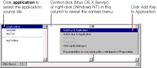

PATH
Documentation > WebObjects 4.5 >
Tools and Techniques
Working with Application and Session Variables
The Edit Source pull-down list applies to the keys and actions in the component's source file only. It does not manipulate the session or application source files. To add keys or actions to the application source file:
-
Select application
from the object browser
-
Control-click (Rhapsody) or right-click (Windows NT) in the second column of the object browser.
-
Choose Add Key to Application or Add Action to Application from the menu that appears.

Similarly, to add keys or actions to the session source file, select session
from the object browser and perform steps 2 and 3 above.
You can delete or rename an application or session key with the context menus. Control-click the key in the object browser (Rhapsody) or right-click the key (Windows NT) to access the context menu. Choose Delete key
or Rename key
.
© 1999 Apple Computer, Inc. – (Last Updated July 27 99)